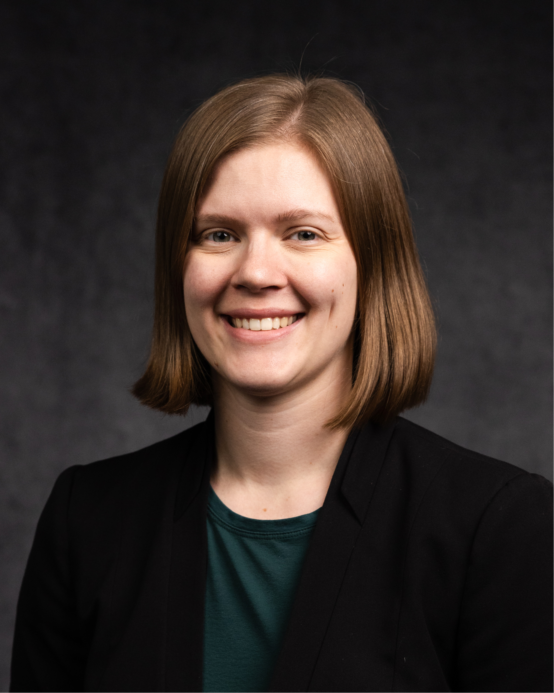

Kaleigh Yost, Ph.D., P.E.
Assistant Professor The Pennsylvania State University Department of Civil and Environmental Engineering
Dr. Kaleigh Yost is a geotechnical engineer and an assistant professor in the Department of Civil and Environmental Engineering at Pennsylvania State University. Her research aims to improve infrastructure and community resilience to increasingly frequent and severe natural hazards through advancing the state-of-the-art in geotechnical site characterization and modeling techniques for multi-hazard applications.
Kaleigh received her Ph.D. from Virginia Tech, her M.S. from the University of Texas at Austin, and her B.S. from the University of Notre Dame. Prior to pursuing her Ph.D., Kaleigh worked as a geotechnical engineer in the Washington D.C. area, and contributed to over 15 international projects on four continents. Kaleigh is a registered professional engineer in the Commonwealth of Pennsylvania.
Kaleigh serves as a co-chair for the Earthquake Engineering Research Institute Public Policy and Advocacy Committee and as a mentor for ARISE-US, a national chapter of the United Nations Office for Disaster Risk Reduction ARISE National Networks.
She is the recipient of the 2025 Earthquake Engineering Research Institute Younger Member Award and serves on the board of the United States Universities Council on Geotechnical Education and Research (USUCGER).